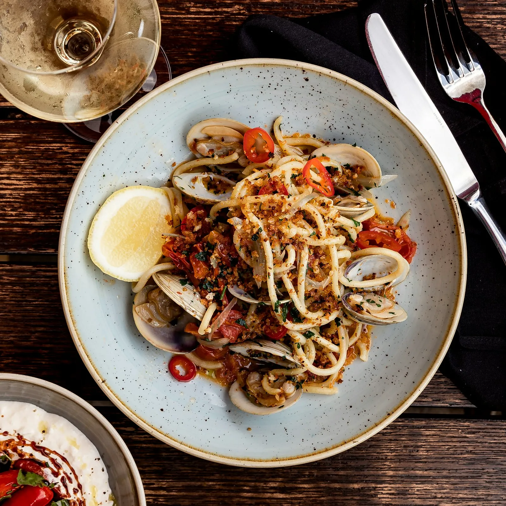

De kaart
Keuken uit alle Italiaanse regio's, eenvoudig en royaal.
Antipasti, verse pasta, vlees, pizza's, desserts, dranken en wijnen: de volledige kaart, met prijzen.
Keuken
Antipasti
Koude voorgerechten
Onze salades
Warme voorgerechten
Pasta's uit de Romeinse traditie
Onze herwerkte verse pasta's
Prestigevlees / gegrild
Gerijpt prestigevlees, met been 1 kg en zonder been 350 g: aarzel niet onze suggestietabel « Prestigevlees » te raadplegen. Bijgerecht: frietjes of rozemarijnaardappelen.
Gepaneerde vleesgerechten / escalopes
Al onze vleesgerechten worden geserveerd met frietjes, verse pasta, rozemarijnaardappelen of salade
Sauzen
Supplementen vlees
Vis
Kindermenu / Bimbi
Enkel voor kinderen
I nostri panuozzi
De panuozzo is een emblematische sandwich uit de Napolitaanse keuken. Het is een brood dat in de houtoven wordt gebakken, bereid met hetzelfde deeg als pizza, vaak langwerpig van vorm, dat na het bakken wordt opengesneden en gevuld.
Klassieke pizza's rosse / rood
(Fleur de lait / Fior di latte = Napolitaanse mozzarella uit Agerola) Al onze pizza's worden belegd met oregano. Wenst u die niet, vermeld dit dan bij uw bestelling.
Klassieke pizza's bianche / wit
Supplementen klassieke pizza's
Napolitaanse pizza's rosse / rood
Alle Napolitaanse pizza's worden geserveerd met basilicum. De Napolitaanse pizza's worden volgens de traditie bereid: er kunnen geen supplementen worden toegevoegd, om de authenticiteit van deze specialiteit te respecteren.
Napolitaanse pizza's bianche / wit
Desserts
Desserts
Dranken
Softdrinks
Bieren
Aperitivo italiano
Mocktails 0 %
Alcoholvrije cocktails
Alcohol & aperitieven
Gins
R(H)um
Whisky
Vodka
Cognac
Digestieven
Illy-koffies & thee
Wijnen
Bubbels · Italië
Bubbels · Frankrijk
Wijnen uit Abruzzo · Selectie van de patron
Cantina Tollo, Abruzzo. Prijs: glas, 1/4, 1/2 en 75 cl.
Witte wijnen · Abruzzo
Witte wijnen · Campania
Witte wijnen · Friuli
Witte wijnen · Marche
Witte wijnen · Piemonte
Witte wijnen · Puglia
Witte wijnen · Sicilia
Rosé wijnen · Abruzzo
Rosé wijnen · Veneto
Rosé wijnen · Puglia
Rosé wijnen · Sicilia
Rode wijnen · Piemonte Prunotto
Rode wijnen · Lombardia
Rode wijnen · Veneto
Rode wijnen · Umbria
Rode wijnen · Abruzzo
Rode wijnen · Puglia
Rode wijnen · Toscana
Rode wijnen · Campania (herkomstregio van de patron)
Rode wijnen · Sicilia
Toppers / uitzonderlijke wijnen
Opgelet, de prijzen kunnen variëren naargelang het jaargang.
Uitzonderlijke wijnen · Super Toscans
Halve flessen · Wit · Sicilia
Halve flessen · Rosé · Veneto
Halve flessen · Rood · Veneto
Halve flessen · Rood · Toscana
Halve flessen · Rood · Sicilia
Prijzen incl. btw. Allergenen: vraag het aan ons team.